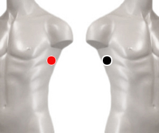

Pleuritis viral
Pares
infraaxilar - infraaxilar
pleura - pleura

Generalidades:
Es rara pero se dá por brotes, simula una neumonía o bronquitis con fiebre, tos seca. Produce un Infiltrado en asociación con otro virus. Buscarlo.
Es la inflamación del revestimiento de los pulmones y el tórax (la pleura) que ocasiona dolor torácico (generalmente agudo) al tomar una respiración o toser.
Transmisión:
Según el virus causante.